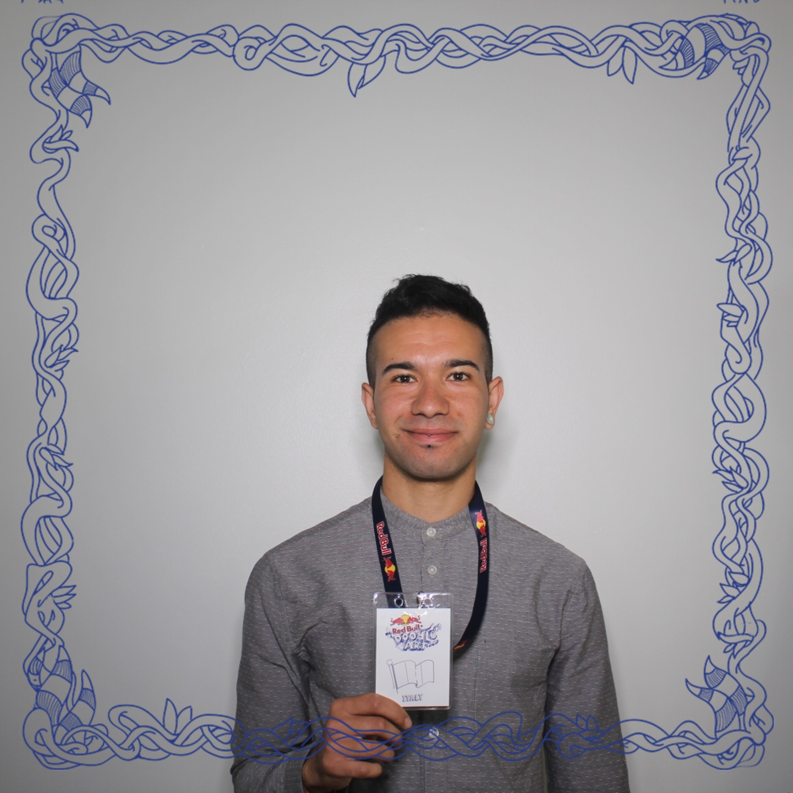

Paolo Sortino

Mi presento
Sono un grafico e Illustratore freeelancer
Istruzione e Formazione
- Laurea in Design della Comunicazione Visiva - Accademia di belle Arti di Catania 2016-2022
- Diploma Tecnico per Geometri - ITG Caltagirone 2008-2013
Esperienze Lavorative
- Grafico e Illustratore freelancer
2025-2023
- Progettazione grafica digitale
- Creazione contenuti social
- Illustrazioni digitali e cartacee
- Operaio
2024-2023
- Montaggio e Assemblaggio
- Controllo qualità
Skills
- Adattabilità
- Team working
- Problem Solving
Attestati e Workshop
- Realtà aumentata, Tilt Brush e Pittura 3D
Academy of University, San Francisco USA - 2017
Altro da scoprire